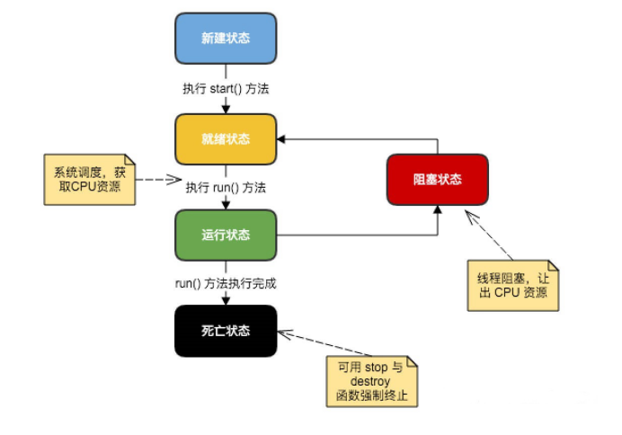

一、线程与进程
线程：一条线程指的是进程中一个单一顺序的控制流，一个进程中可以并发多个线程，每条线程并行执行不同的任务。多线程是多任务的一种特别形式，但多线程使用了更小的资源开销。
进程：一个进程包括有操作系统分配的内存空间，包含一个或多个线程。一个线程不能独立的存在。它必须是进程的一部分。一个进程一直运行直到所有的非守护线程都结束运行后才能结束。
| 进程 | 线程 | |
| 定义 |
进程是指处于运行中的程序，并且具有一定的独立功能。进程是系统进行资源分配和调度的一个单位。 当程序进入内存时，即为进程。 |
线程是进程的组成部分，一个进程可以拥有多个线程，而一个线程必须拥有一个父进程。 线程可以拥有自己的堆栈，自己的程序计数器和局部变量，但不能拥有系统资源。 它与父进程的其他线程共享该进城的所有资源。 |
| 特点 |
1）独立性：进程是系统中独立存在的实体，它可以独立拥有资源，每一个进程都有自己独立的地址空间， 没有进程本身的运行，用户进程不可以直接访问其他进程的地址空间。 2）动态性：进程和程序的区别在于进程是动态的，进程中有时间的概念，进程具有自己的生命周期和各种 不同的状态。 3）并发性：多个进程可以在单个处理器上并发执行，互不影响。 |
1）线程可以完成一定任务，可以和其他线程共享父进程的共享变量和部分环境，相互协作来完成任务。 2）线程是独立运行的，其不知道进程中是否还有其他线程存在。 3）线程的执行是抢占式的，也就是说，当前执行的线程随时可能被挂起，一边运行另一个线程。 4）一个线程可以创建或撤销另一个线程，一个进程中的多个线程可以并发执行。 |
二、线程的生命周期

新建状态（New）
使用new关键字和Thread类或七子类建立一个线程对象后，该线程对象就处于新建状态。此时仅由JVM为其分配内存，并初始化其成员变量的值。它保持这个状态知道程序start()这个线程。
就绪状态（runnable）
当线程对象调用了start()方法之后，该线程就进入就绪状态。就绪状态的线程处于就绪队列中，Java虚拟机会为其创建方法调用栈和程序计数器，等待JVM里线程调度器的调度。
运行状态（running）
如果就绪状态的线程获取CPU资源，就可以执行run方法，此时线程便处于运行状态。处于运行状态的线程最为复杂，它可以变为阻塞状态、就绪状态和死亡状态。
阻塞状态（blocked）
线程因为某种原因放弃了CPU使用权，暂时停止运行。直到线程进入可运行状态，才有机会再次获得CPU timeslice 转到运行状态。
如果一个线程执行了sleep（睡眠），suspend（挂起）等方法，失去所占用资源之后，该线程就从运行状态进入阻塞状态。在睡眠时间已到或获得设备资源后可以重新进入就绪状态。可以分为三种：
1）等待阻塞：运行状态中的线程执行wait方法，使线程进入到等待阻塞状态；
2）同步阻塞：线程在获取synchronized同步锁失败（因为同步锁被其他线程占用）；
3）其他阻塞：通过调用线程的sleep()或join()发出了IO请求时，线程就会进入到阻塞状态。当sleep()状态超时，join()等待线程终止或超时，或IO请求处理完毕，线程重新转入就绪状态。
死亡状态（dead）
一个运行状态的线程完成任务或其他终止条件发生时，该线程就切换到终止状态。
正常结束：run()或call()方法执行完成，线程正常结束。
异常结束：线程抛出一个未捕获的Exception或Error。
调用stop：直接调用该线程的stop()方法结束该线程（该方法容易导致死锁，不推荐使用）。
为了确定线程在当前是否存活着（就是要么是可运行的，要么是被阻塞了），需要使用isAlive方法。如果是可运行或被阻塞，这个方法返回true；如果线程仍旧是new状态且不是可运行的，或线程死亡了，则返回false。
三、线程优先级
每个线程都有一个优先级，方便操作系统确定线程的调度顺序。Java线程的优先级是一个整数，其取值范围是1（Thread.MIN_PRIORITY）-10（Thread.MAX_PRIORITY）。
默认情况下，每一个线程都会分配一个优先级 NORM_PRIORITY（5）。具有较高优先级的线程在低优先级的线程之前分配处理器资源。但线程优先级不能保证线程执行的顺序，而且非常依赖于平台。
四、创建线程的方式
1）继承Thread类：Thread类本质上是实现了Runnable接口的一个实例。启动线程的方法就是通过Thread类的start()方法。他是一个native方法，它将启动一个新线程，并执行其中的run()方法。
1 public class MyThread extends Thread {
2 public void run() {
3 System.out.println("MyThread.run()");
4 }
5 }
6 MyThread myThread1 = new MyThread();
7 myThread1.start(); 2）实现Runnable接口
1 public class MyThread extends OtherClass implements Runnable {
2 public void run() {
3 System.out.println("MyThread.run()");
4 }
5 }
6 //启动 MyThread，需要首先实例化一个 Thread，并传入自己的 MyThread 实例：
7 MyThread myThread = new MyThread();
8 Thread thread = new Thread(myThread);
9 thread.start();
10 target.run(); //当传入一个 Runnable target 参数给 Thread 后，Thread 的 run()方法就会调用
11 public void run() {
12 if (target != null) {
13 target.run();
14 }
15 } 3）通过Callable和Future创建线程
i. 创建Callable接口的实现类，并实现call()方法，该call()方法将作为线程执行体，并且有返回值。
ii. 创建Callable实现类的实例，使用FutureTask类包装Callable对象，该FutureTask对象封装了Callable对象的call()方法的返回值。
iii. 使用FutureTask对象作为Thread对象的target创建并启动新线程。
iv. 调用FutureTask对象的get()方法来获得子线程执行结束后的返回值。
1 //创建一个线程池
2 ExecutorService pool = Executors.newFixedThreadPool(taskSize);
3 // 创建多个有返回值的任务
4 List<Future> list = new ArrayList<Future>();
5 for (int i = 0; i < taskSize; i++) {
6 Callable c = new MyCallable(i + " ");
7 // 执行任务并获取 Future 对象
8 Future f = pool.submit(c);
9 list.add(f);
10 }
11 // 关闭线程池
12 pool.shutdown();
13 // 获取所有并发任务的运行结果
14 for (Future f : list) {
15 // 从 Future 对象上获取任务的返回值，并输出到控制台
16 System.out.println("res：" + f.get().toString());
17 } 4）基于线程池的方式
1 ExecutorService threadPool = Executors.newFixedThreadPool(10); // 创建线程池
2 while(true) {
3 threadPool.execute(new Runnable() { // 提交多个线程任务，并执行
4 public void run() {
5 System.out.println(Thread.currentThread().getName() + " is running ..");
6 try {
7 Thread.sleep(3000);
8 } catch (InterruptedException e) {
9 e.printStackTrace();
10 }
11 }
12 });
13 } 五、终止线程的方式
1.正常运行结束：程序运行结束，线程自动结束。
2.使用退出标志退出线程
一般run()方法执行完，线程就会正常结束，然而，常常有些线程是伺服线程。它们需要长时间的运行，只有在外部某些条件满足的情况下，才能关闭这些线程。使用一个变量来控制循环，例如：最直接的方法就是设一个boolean类型的标志，并通过设置这个标志为true或false来控制while循环是否退出，代码示例：
1 public class ThreadSafe extends Thread {
2 public volatile boolean exit = false;
3 public void run() {
4 while (!exit){
5 //do something
6 }
7 }
8 }定义了一个退出标志exit，当exit为true时，while循环退出，exit的默认值为false。在定义exit时，使用了一个Java关键字volatile，这个关键字的目的是使exit同步，也就是说在同一时刻只能由一个线程来修改exit值。
3.Interrupt方法结束线程
使用interrupt()方法来中断线程有两种情况：
1）线程处于阻塞状态：如使用了sleep，同步锁的wait、socket中的receiver、accept等方法时，会使线程处于阻塞状态。当调用线程的interrupt()方法时，会抛出InterruptException异常。阻塞中的那个方法抛出这个异常，通过代码捕获该异常，然后break跳出循环状态，从而让我们有机会结束这个线程的执行。通常很多人认为只要调用interrupt方法线程就会结束，实际上是错的，一定要先捕获InterruptedException异常之后通过break来跳出循环，才能正常结束run方法。
2）线程未处于阻塞状态：使用isInterrupted()方法判断线程的中断标志来退出循环。当使用interrupt方法时，中断标志就会置true，和使用自定义的标志来控制循环是一样的道理。
1 public class ThreadSafe extends Thread {
2 public void run() {
3 while (!isInterrupted()){ //非阻塞过程中通过判断中断标志来退出
4 try{
5 Thread.sleep(5*1000);//阻塞过程捕获中断异常来退出
6 }catch(InterruptedException e){
7 e.printStackTrace();
8 break;//捕获到异常之后，执行 break 跳出循环
9 }
10 }
11 }
12 }4.Stop方法终止线程（线程不安全）
程序中可以直接使用thread.stop()来强行终止线程，但是stop方法很危险，就像突然关闭计算机电源，而不是按正常程序关机一样，可能会产生不可预料的结果，不安全主要是：
thread.stop()调用后，创建子线程的线程就会抛出ThreadDeatherror的错误，并且会释放子线程所持有的所有锁。一般任何进行加锁的代码块，都是为了保护数据的一致性，如果在调用thread.stop()后导致了该线程所持有的所有锁被突然释放（不可控制），那么被保护数据就有可能呈现不一致性，其他线程在使用这些被破坏的数据时，有可能导致一些很奇怪的应用程序错误。因此，并不推荐使用stop方法来终止线程。
六、线程同步的方式
临界区：通过对多线程的串行化来访问公共资源或一段代码，速度快，适应控制数据访问。
互斥量：采用互斥对象机制，只有拥有互斥对象的线程才有访问公共资源的权限，因为互斥对象只有一个，所以可以保证公共资源不会同时被多个线程访问。
信号量：它允许多个线程统一时刻访问同一资源，但是需要限制同一时刻访问此资源的最大线程数目。信号量对象对线程的同步方式与前面几种方法不同，信号允许多个线程同时使用共享资源，这与操作系统中PV操作相似。
事件（信号）：通过通知操作的方式来保持对线程的同步，还可以方便的实现多线程的优先级比较的操作。
七、进程同步与互斥的区别
互斥：是指某一资源同时只允许一个访问者对其进行访问，具有唯一性和排他性。但互斥无法限制访问者对资源的访问顺序，即访问是无序的。
同步：是指在互斥的基础上（大多数情况），通过其他机制实现访问者对资源的有序访问。在大多数情况下，同步已经实现了互斥，特别是所有写入资源的情况必定是互斥的。少数情况是指可以允许多个访问者同时访问资源。
同步体现的是一种协作性，护持体现的是一种排他性。
八、Java后台线程
守护线程（Daemon）：也称服务线程，是后台线程。为用户线程提供公共服务，在没有用户线程可服务是会自动离开。
1.优先级较低，用于为系统中的其他对象和线程提供服务。
2.设置：通过setDaemon(true)来设置线程为“守护线程”。
3.垃圾回收线程就是守护线程，它始终在低级别的状态运行，用于监视和管理系统中的可回收资源。
4.生命周期：守护线程不依赖于终端但依赖于系统，与系统“同生共死”。
九、如何在两个线程之间共享数据？
Java里面进行多线程痛心的主要方式就是共享内存的方式，共享内存主要的关注点有两个：可见性和有序性。Java内存模型（JMM）解决了可见性和有序性的问题，而锁解决了原子性的问题，理想情况下我们希望做到“同步”和“互斥”。有以下常规实现方法：
1.将数据抽象成一个类，并将数据的操作作为这个类的方法，这么设计可以很容易做到同步，只要在方法上加“synchronized”
1 public class MyData {
2 private int j=0;
3 public synchronized void add(){
4 j++;
5 System.out.println("线程"+Thread.currentThread().getName()+"j 为："+j);
6 }
7 public synchronized void dec(){
8 j--;
9 System.out.println("线程"+Thread.currentThread().getName()+"j 为："+j);
10 }
11 public int getData(){
12 return j;
13 }
14 }
15 public class AddRunnable implements Runnable{
16 MyData data;
17 public AddRunnable(MyData data){
18 this.data= data;
19 }
20 public void run() {
21 data.add();
22 }
23 }
24 public class DecRunnable implements Runnable {
25 MyData data;
26 public DecRunnable(MyData data){
27 this.data = data;
28 }
29 public void run() {
30 data.dec();
31 }
32 }
33 public static void main(String[] args) {
34 MyData data = new MyData();
35 Runnable add = new AddRunnable(data);
36 Runnable dec = new DecRunnable(data);
37 for(int i=0;i<2;i++){
38 new Thread(add).start();
39 new Thread(dec).start();
40 }
41 }
2.将Runnable对象作为一个类的内部类，共享数据作为这个类的成员变量，每个线程对共享数据的操作方法也封装在外部类，以便实现对数据的各个操作的同步和互斥，作为内部类的各个Runnable对象调用外部类的这些方法。
1 public class MyData {
2 private int j=0;
3 public synchronized void add(){
4 j++;
5 System.out.println("线程"+Thread.currentThread().getName()+"j 为："+j);
6 }
7 public synchronized void dec(){
8 j--;
9 System.out.println("线程"+Thread.currentThread().getName()+"j 为："+j);
10 }
11 public int getData(){
12 return j;
13 }
14 }
15 public class TestThread {
16 public static void main(String[] args) {
17 final MyData data = new MyData();
18 for(int i=0;i<2;i++){
19 new Thread(new Runnable(){
20 public void run() {
21 data.add();
22 }
23 }).start();
24 new Thread(new Runnable(){
25 public void run() {
26 data.dec();
27 }
28 }).start();
29 }
30 }
31 }十、多线程中的常见问题？
1. run()方法和start()方法之间的区别？
只有调用了start方法，才会表现出多线程的特性，不同线程的run方法里面的代码交替执行。如果只是调用run方法，那么代码还是同步执行的，必须等待一个线程的run方法里面的代码全部执行完毕之后，另外一个线程才可以执行其run方法里面的代码。
i. start()方法来启动线程，真正实现了多线程运行。这时无需等待run方法体代码执行完毕，可以直接继续执行下面的代码。
ii. 通过调用Thread类的start方法来启动一个线程，这时此线程是处于就绪状态，并没有运行。
iii. 方法run称为线程体，它包含了要执行的这个线程的内容，线程就进入了运行状态，开始运行run函数中的代码。run方法运行结束，此线程终止，然后CPU再调度其他线程。
2. Runnable接口和Callable接口的区别？
Runnable接口中的run()方法的返回值为void，它做的事情只是纯粹地去执行run()方法中的代码而已。Callable接口中的call()方法是有返回值的，是一个泛型，和Future、FutureTask配合可以用来获取异步执行的结果。
Callable+Future/FutureTask可以获取多线程运行的结果，可以在等待时间太长没获取需要的数据的情况下取消该线程的任务。
3. Sleep()方法和Wait()方法的区别？
sleep方法和wait方法都可以用来放弃CPU一定的时间，不同点在于如果线程持有某个对象的监视器（监视对象同步），sleep方法不会放弃这个对象的监视器， wait方法会放弃这个对象的监视器，并且wait只能在同步中使用。
sleep方法属于Thread类，sleep方法导致了程序暂停执行指定的时间，让出CPU给其他线程，但是它的监控状态依然保持着，当指定的时间到了又会自动恢复运行状态。在调用sleep方法过程中，线程不会释放对象锁。
wait方法属于Object来，当调用方法时，线程会放弃对象锁，进入等待此对象的等待锁定池，只有针对对象调用notify方法后本线程才进入对象锁定池，准备获取对象锁进入运行状态。
4.线程让步（yield）
yield会使当前线程让出CPU执行时间片，与其他线程一起重新竞争CPU时间片。一般情况下，优先级高的线程有更大的可能性成功竞争得到CPU时间片，但这又不是绝对的，有的操作系统对线程优先级并不敏感。
5. join 等待其他线程终止
join方法，等待其他线程终止，在当前线程中调用一个线程的join方法，则当前线程转为阻塞状态，当另一个线程结束，当前线程再由阻塞状态变为就绪状态，等待CPU。
为什么要用join方法？
很多情况下，主线程生成并启动子线程，需要用到子线程返回结果，也就是主线程需要在子线程结束后再结束，这时就要用到join方法。
1 System.out.println(Thread.currentThread().getName() + "线程运行开始!");
2 Thread6 thread1 = new Thread6();
3 thread1.setName("线程 B");
4 thread1.join();
5 System.out.println("这时 thread1 执行完毕之后才能执行主线程");